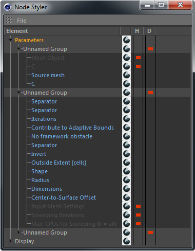

Node Styler

The Node Styler dialog is used to style any Node Group interfaces. It will open up when you double-click on a Node Group object icon in the Object Manager.
It shows all settings (one setting per row) of all nodes that are handled by the according Node Group.
Each row has two additional columns 'H' and 'D' for Hiding or Disabling that setting respectively.
A red block icon will be shown for an accordingly activated setting.
Hiding
Hiding an element will indeed completely remove that element in the AM (don't worry, it's only visually hidden).
Hiding a group or tab will also hide all settings that group/tab contains.
Disabling
Disabling a setting will grey it out. This is useful if you want to remember (or if you share the node group, let the user know) that there is such a setting but
you don't want it to be modified (for whatever reason).
Disabling a group will actually remove the grouping but keep the settings it contains.